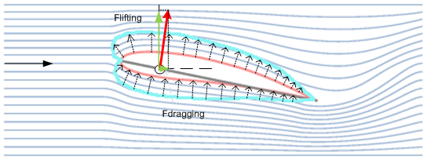

Os princípios básicos que regem as forças que atuam sobre as pás de turbinas eólicas e que fazem com que o hub ao qual estão conectadas rotacione são os mesmos que permitem que as aeronaves ascendam. A rotação é devido ao fato de que o hub tem apenas um grau de liberdade: girar em seu eixo.
O que são estas forças?
Vamos imaginar que temos umasa de aviãoem um túnel de vento, como mostrado na figura. 1. Em um túnel de vento, o fluxo de ar é uniforme, por isso não há turbulência (ou seja, "Fluxo laminar"). E podemos variar a sua intensidade à vontade.
A ala (representada pela sua secção, delimitada pelolinha vermelha) é colocado dentro deste túnel de vento, e nós o protegemos firmemente para fora do túnel de vento para que ele não possa se mover. Isto é feito combarra internaque cruza a asa ao longo de seu eixo mais longo (o círculo é mostrado no centro), permitindo-nos girá-la. Desta forma, podemos mudar o ângulo do acorde da asa para o vento.

Fig. 1.
O efeito do vento, vindo da esquerda, na asa é umcompressão do fluxona parte inferior da lâmina e uma depressão no seu lado superior. O resultado é um conjunto de forças aplicadas ao longo da superfície da lâmina: este conjunto de forças é indicado pelas pequenas setas pontilhadas.
Uma vez que a lâmina é umcorpo rígido, o efeito total dessas forças pode ser assimilado a uma única força cujo valor é a soma vetorial de todas elas, e que é aplicada no ponto de fixação, a barra representada pelo círculo: esta força é indicada pelovetor vermelho. A magnitude e direção desta força depende de:
•aforma da lâmina,
•avelocidade dachegandovento,
•aânguloentreacorde da lâmina (linha cinzentaligação das duas extremidades da lâmina) e a direcção do vento (setapara a esquerda).
Podemos quebrar este vetor vermelho à vontade: neste caso particular, é conveniente pensar neste vetor vermelho como a soma de duas forças: uma para subir, chamadaFlifting, e outro que vai para a direita, chamadoFdragging.
Estas duas forças explicam porque o avião permanece no ar (devido aFlifting), e por isso deve ser empurrado para a esquerda (para superar Fdragging) para que o avião permaneça suspenso no ar. Esta força é o que os motores do avião devem superar.
Agora vamos substituir a asa do avião pela lâmina de uma turbina eólica e colocá-la em relação ao eixo da turbina. A situação é semelhante, mas inversa. Veja a figura seguinte, que mostra a visão que um observador de pé na ponta de uma das lâminas e olhando para o eixo do cubo teria. O vento estaria na frente deles e as lâminas girariam para a esquerda em um plano perpendicular à tela e passando através dovetor preto.

Fig. 2.
Neste caso, o vento batendo na borda da lâmina é o "vento total" (vetor vermelho), uma combinação do vento incidente (vetor azul) erotacionalvento (vetor preto), que é produzido pela lâmina como gira porque está a uma certa distância do ponto de rotação (o eixo do cubo). Estamos assumindo que a rotação ocorre "à esquerda" e que, devido a este movimento, a borda contundente da lâmina "cortes perpendicularmente" atravéso vento incidente. A velocidade deste corte não é uniforme ao longo da borda: é menor quanto mais perto a seção da lâmina que estamos olhando é para o centro do cubo (verLâminas). Esta velocidade de corte do ar é equivalente a um vento soprando na direção oposta com a lâmina permanece estática.
Nesta breve explicação, assumiremos que a velocidade deste vento que nos interessa é a velocidade "média" ao longo de toda a borda.
A representação à esquerda é uma forma de resolver o problema de representar a lâmina rotativa, fazendo a mudança de propor uma "visão da própria lâmina", como se estivéssemos sentados na extremidade da lâmina olhando para o eixo de rotação no cubo. O vetor negro corresponderia ao vento que sentiríamos em nosso rosto devido a essa rotação.
A força total é representada pelavetor verde, e semelhante ao caso do túnel de vento e da asa do avião, nós o quebramos em duas forças: uma que puxa a lâmina ao longo de seu único grau de liberdade (o plano de rotação), e outra (vector castanho claro) that goes in the direction of the hub axis and is counteracted by the tower; that is, this is the force that tries to bend the tower.
Este conjunto de forças depende do ângulo relativo da lâmina em relação ao seu plano de rotação: ou seja, na figura acima, no ângulo entre o linha vermelha pontilhada e o eixo horizontal.